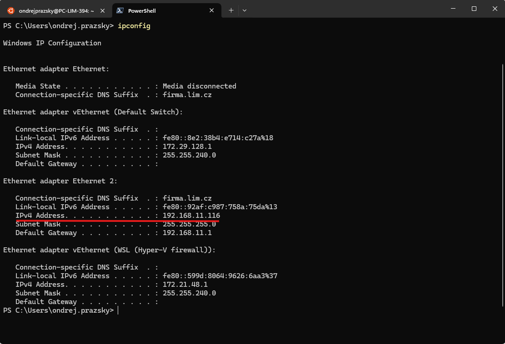

The Network Name can be changed later and represents the network with the seserver computer.
The Network URL is important as the account is identified by the URL.

Usually it is not possible (or desirable) to expose the server to the internet due to security reasons.
To overcome this limitation technologies like VPN emerged. They act as tunnel over HTTPS that connects a location outside of the local network and the local network. To the client it appears as if it were inside the local network.
Usually there is a program running on the local network and a program on the client PC outside of the local network that make the connection possible.
It is likely that your institution is already using some VPN. In that case it can be used to access the SE Server. Otherwise here is step-by-step guide on how to set up a Twingate kind of VPN.
Here is an example how to set up Twingate. It is easy to setup, free for up to 5 users and provides lots of features.
After following this guide a default distribution (Ubuntu) should be installed and available in the terminal window.
Download and install Docker Desktop. Skip the signup and make sure you select the WSL2 virtualization.
After successful installation check the Settings and make sure that following two options are check.
Open the Ubuntu terminal and type:
docker --version
Docker version 27.4.0, build bde2b89
The version should same as in docker app.
Click Try Twingate for Free > at twingate.com and fill following three pages:
The Network Name can be changed later and represents the network with the seserver computer.
The Network URL is important as the account is identified by the URL.
Setup the resource (seserver computer) in three steps. It can be deleted and created again.
Prepare the IP address of the seserver computer. Use
ipconfig
command. And find an Ethernet adapter which is connected:
Select "An IP Address", "Server (Windows, Linux, etc.)" and type in the IP address of the seserver.

Select "Docker", click "Generate Tokens" (authenticate), check the "Make Connector available on local network".
Click the "Copy command" and paste into the Ubuntu terminal and press enter.
The command downloads an image and runs it as a container in docker. Check it in the Docker Desktop.
See below how to test the connection with your phone.
Now, lets add an alias to the server Resource so we can use it as with DNS.
Navigate to Resources, click the three vertical dots and select edit. Rename the Resource if you want and click on the alias icon. The write the FQDN you use in the browser.
You can restrict the ports to 443 only.
The resource must be granted access rights. Set it to everyone. Everyone means just you (see the team) right now.

To check that the resource is accessible lets try to connect to the seserver using a phone.
After authenticating in the app, the resource is visible.
Open the browser and navigate to the alias.